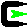

Creating RT Components (NXTway Edition)

✏️ Edit this page on GitHub
#contents #clear
Introduction
- This section explains how to connect NXT MINDSTORM with an OpenRTM Bluetooth component and control NXT MINDSTORM.
- It explains how to install software on NXT MINDSTORM, basic operations, and how to connect it to RT components.

Environment Setup
Assembling LEGO
- Required parts
- LEGO MINDSTORMS Education NXT Base Set
- Product ID: W979797
- LEGO MINDSTORMS Education NXT Base Set

- LEGO Education Resource Set
- Product ID: W979648

- NXT Gyro Sensor
- Part No : NGY1044
{kind=link}
- How to assemble LEGO
- Refer to “NXTway-GS_Building_Instructions.pdf”
- Download : http://lejos-osek.sourceforge.net/NXTway-GS_Building_Instructions.pdf
nxtOSEK Environment Setup (Windows XP/Vista)

- Installing Cygwin
- Cygwin makes it possible to run various Linux software in a Windows environment
- Download : http://www.cygwin.com/
- Configuration options
- Root Directory :
c:\cygwin - Select Packages : Select and install “make 3.81-1” in the Devel category and “libintl3” in the Libs category
- Root Directory :
- Installing GNU ARM (must be 4.0.2)
- GNU ARM is a GCC compiler package that supports the ARM7 core processor (AT91SAM7S256) of NXT
- Download : bu-2.16.1_gcc-4.0.2-c-c++_nl-1.14.0_gi-6.4.exe
- Configuration options
- Diriectory :
c:\cygwin\GNUARM - Select Components : Do not select “Floating Point Unit”
- Select Additional Tasks : Do not select “Install Cygwin DLLs…”
- Diriectory :
- Installing the LEGO MINDSTORMS NXT Driver
- This is a USB communication driver for NXT provided by LEGO
- Download : http://mindstorms.lego.com/en-us/support/files/Driver.aspx
- Install the PC version of Driver 1.02
- Downloading NeXTTool
- NeXTTool is a PC console for communication with NXT, and can upload i*.rxe (apps) and *.rfw (firmware) to NXT
- Download : http://bricxcc.sourceforge.net/nexttool.zip
- Configuration options
- Extraction directory : “c:\cygwin\nexttool”
- Downloading the enhanced NXT firmware
- The enhanced NXT firmware is based on the standard NXT firmware and extends its functionality
- It can also execute native code for the ARM7 core CPU of NXT
- Download : http://bricxcc.sourceforge.net/nexttool.zip
- Configuration options
- Copy only
lms_arm_nbcnxc_107.rfw - Copy directory :
c:\cygwin\nexttool
- Copy only
- Downloading nxtOSEK
- Download version 2.13
- Download : http://bricxcc.sourceforge.net/nexttool.zip
- Configuration options
- Extraction directory :
c:\cygwin\nxtOSEK
- Extraction directory :
- Adding the “sg.exe” file
- Download : http://www.toppers.jp/download.cgi/osek_os-1.1.lzh
- Extract it, and copy the “sg.exe” file located under the “sg” folder inside the “toppers_osek” folder to the “c:\cygwin\nxtOSEK\toppers_osek\sg” folder
Uploading the Enhanced NXT Firmware to NXT
- NXT firmware update mode
- With the power ON, keep pressing the reset button with the tip of a safety pin for about 5 seconds
{kind=link}
- You will hear a small clicking sound from the NXT speaker
- Connect NXT and the PC via USB
- Starting Cygwin and uploading the enhanced firmware

Start cygwin- Enter the following commands
$cd c:\cygwin\nexttool $./NeXTTool.exe /COM=usb -firmware=lms_arm_nbcnxc_107.rfw - When the upload is complete, the NXT LCD screen will look like static noise
- If the NXT buttons cannot be operated, remove the NXT battery and attach it again to start the enhanced NXT firmware
- Enter the following commands
{kind=link}
Modifying and Compiling the NXTway Source
Modifying, compiling, and uploading the source on the NXT side
- Source modification
- In “sample.cpp” in the “c:\cygwin\nxtOSEK\samples_c++\cpp\NXTway_GS++” folder
{kind=link}
- If you search for “btConnection.connect”, you can find the function in the following “Main Task”
//=============================================================================
// Main Task
TASK(TaskMain)
{
// establish blutooth connection with a PC to use a PC HID GamePad controller
BTConnection btConnection(bt, lcd, nxt);
(void)btConnection.connect(BT_PASS_KEY);
for (U32 i = 5; i <= Lcd::MAX_CURSOR_Y; i++) lcd.clearRow(i);
lcd.cursor(0,5);
lcd.putf("snsns", "TOUCH:START/STOP", "STAND IT UP AND", "WAIT FOR A BEEP.");
lcd.disp();
SetRelAlarm(Alarm4msec, 1, 4); // Set 4msec periodical Alarm for the drive event
while(1)
{
sonarDriver.checkObstacles(sonar);
clock.wait(40); // 40msec wait
}
}
- Modify “(void)btConnection.connect(BT_PASS_KEY);” as follows
(void)btConnection.connect(BT_PASS_KEY, "alias")
- Enter a name that you can identify in the “alias” part
- Compilation
Start cygwin
$cd c:\cygwin\nxtOSEK\samples_c++\cpp\NXTway_GS++- On cygwin, in the folder above, “C:\cygwin\nxtOSEK\samples_c++\cpp\NXTway_GS++”
$make all ... Generating binary image file: nxtway_gs++_rom.bin Generating binary image file: nxtway_gs++_ram.bin Generating binary image file: nxtway_gs++_.rxe $ - If you see a message like the one above, compilation is complete
- On cygwin, in the folder above, “C:\cygwin\nxtOSEK\samples_c++\cpp\NXTway_GS++”
- Uploading to NXT
- Connect the NXT containing the enhanced NXT firmware via USB
- In the compiled cygwin state
$sh ./rxeflash.sh Executing NeXTTool to upload nxtway_gs++.rxe... nxtway_gs++.rxe=34240 NeXTTool is terminated. $ - If you see a message like the one above, the upload is complete
Operation Check
Starting on the NXT Side
- Wait in state ⑦ in the figure below
{kind=link}
;
Starting the RTC on the PC Side
- Start the OpenRTM-aist Naming Service
{kind=link}
- Start the TkJoyStickComp component
{kind=link}
- Bluetooth connection
- Connect Bluetooth to the PC

- Connect the Bluetooth device with the name entered in the “alias” part
{kind=link}
- The Password is basically set to “1234”

- Check the connected Bluetooth Comport
{kind=link}
- Starting the Bluetooth component
- Download BluetoothComp.zip
- After extracting BluetoothComp.zip, execute the “NXTBlueToothComp.exe” file in the “components” folder
{kind=link}
- Starting RT System Editor
- Start RT System Editor as shown in the figure below
{kind=link}
- Adding Naming Service
- Click the add button as shown in the figure below and add “127.0.0.1”
{kind=link}
- Placing components
- Place the components as shown in the figure below
{kind=link}
- Connect TkJoyStickComp and the Bluetooth component
- Connect TkJoyStickComp and BluetoothComp as shown in the figure below
{kind=link}
- In the Configuration View of the Bluetooth component, enter the confirmed Comport number in the “m_COM” variable

- Activate
{kind=link}
- When the connection is complete, the NXT side will look like the figure below
{kind=link}